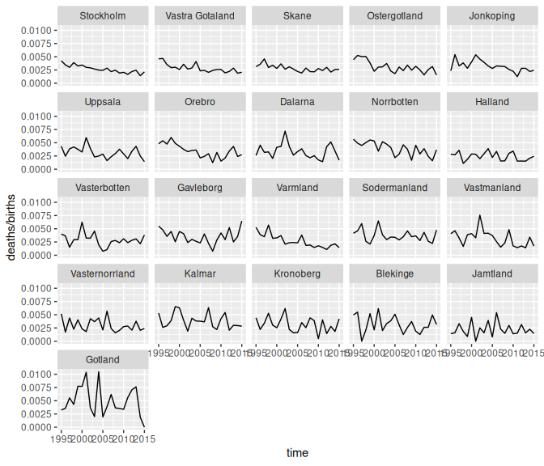

1 Introduction
This vignette uses bage to replicate, with a few differences, case studies in the book Bayesian Demographic Estimation and Forecasting (BDEF). BDEF uses our R package demest. However, we strongly recommend using bage instead. bage is faster, more stable, and has a nicer interface. We are no longer developing demest, and are focusing on bage.
In addition to bage, the vignette uses the tidyverse packages dplyr, tidyr, and ggplot2.
The vignette includes notes aimed at readers of BDEF, pointing out differences between the models in bage and the models in BDEF, and explaning why we made the changes.
BDEF Note
BDEF notes look like this.
2 Infant Mortality in Sweden
2.1 Aims and data
We estimate and forecast infant mortality in Swedish counties. Following standard demographic practice we define the infant mortality rate as the probability of dying during the first year of life, calculated using this year’s infant deaths and this year’s births. (See Chapter 11 of BDEF on why this definition is slightly odd.)
Data for the analysis is in the swe_infant dataset in bage:
swe_infant
#> # A tibble: 441 × 4
#> county time births deaths
#> <fct> <int> <int> <int>
#> 1 Stockholm 1995 22626 96
#> 2 Stockholm 1996 21354 74
#> 3 Stockholm 1997 20646 62
#> 4 Stockholm 1998 20815 81
#> 5 Stockholm 1999 20863 68
#> 6 Stockholm 2000 21837 75
#> 7 Stockholm 2001 22622 68
#> 8 Stockholm 2002 24084 70
#> 9 Stockholm 2003 25028 67
#> 10 Stockholm 2004 25779 64
#> # ℹ 431 more rowsThe figure below shows direct estimates of infant mortality rates. Each panel depicts one county. The panels are ordered from top left to bottom right by the number of births in each county.
ggplot(swe_infant, aes(x = time, y = deaths / births)) +
facet_wrap(vars(county)) +
geom_line()
2.2 Initial model
Our model uses default settings for all priors and parameters.
mod <- mod_binom(deaths ~ county + time,
data = swe_infant,
size = births)
mod
#>
#> ------ Unfitted binomial model ------
#>
#> deaths ~ county + time
#>
#> size: births
#>
#> term prior along n_par n_par_free
#> (Intercept) NFix() - 1 1
#> county N() - 21 21
#> time RW() time 21 21
#>
#> disp: mean = 1
#>
#> n_draw var_time
#> 1000 timeIn this model, deaths in county \(c\) during year \(t\), denoted \(y_{ct}\), are drawn from a binomial distribution with probability \(\pi_{ct}\) and trials \(w_{ct}\), \[\begin{equation} y_{ct} \sim \text{binomial}(\pi_{ct}, w_{ct}). \end{equation}\] The probability \(\pi_{ct}\) is in turn drawn from a beta distribution, with expected value \(\mu_{ct}\) and dispersion parameter \(\xi\), \[\begin{equation} \pi_{ct} \sim \text{Beta}(\xi^{-1} \mu_{ct}, \xi^{-1}[1 - \mu_{ct}]) \end{equation}\] Expected value \(\mu_{ct}\), transformed on to a logit scale, depends on three terms: an intercept, a ‘county’ main effect, and a ‘time’ main effect, \[\begin{equation} \text{logit} \mu_{ct} = \beta^0 + \beta_c^{\mathcal{C}} + \beta_t^{\mathcal{T}} \end{equation}\] Each of these terms has a prior. The intercept has a ‘normal-fixed’ prior, \[\begin{equation} \beta^0 \sim \text{N}(0, 1). \end{equation}\] The county main effect has a ‘normal’ prior, \[\begin{align} \beta_c^{\mathcal{C}} & \sim \text{N}(0, \tau_{\mathcal{C}}^2) \\ \tau_{\mathcal{C}} & \sim \text{N}^+(0, 1). \end{align}\] The time main effect has a random walk prior, \[\begin{align} \beta_t^{\mathcal{T}} & \sim \text{N}(\beta_{t-1}^{\mathcal{T}}, \tau_{\mathcal{C}}^2) \\ \tau_{\mathcal{C}} & \sim \text{N}^+(0, 1). \end{align}\] Finally, the dispersion parameter \(\xi\) has an expontial prior \[\begin{equation} \xi \sim \text{Exp}(1). \end{equation}\]
BDEF Note
This model is slightly different from the infant mortality model in BDEF. The intercept here has a \(\text{N}(0,1)\) prior rather than \(\text{N}(0,10^2)\), and the time effect has a random walk prior rather than a local level prior. (Local level priors have not yet been implemented in
bage.)
We fit the model. Fitting in bage is a lot faster than fitting in demest.
mod <- mod |>
fit()
#> Building log-posterior function...
#> Finding maximum...
#> Drawing values for hyper-parameters...
mod
#>
#> ------ Fitted binomial model ------
#>
#> deaths ~ county + time
#>
#> size: births
#>
#> term prior along n_par n_par_free std_dev
#> (Intercept) NFix() - 1 1 -
#> county N() - 21 21 0.11
#> time RW() time 21 21 0.18
#>
#> disp: mean = 1
#>
#> n_draw var_time optimizer
#> 1000 time nlminb
#>
#> time_total time_max time_draw iter converged message
#> 0.64 0.36 0.22 14 TRUE relative convergence (4)2.3 Extracting parameter estimates
We extract the rates estimates.
aug_init <- mod |>
augment()
aug_init
#> # A tibble: 441 × 7
#> county time births deaths .observed .fitted
#> <fct> <int> <int> <int> <dbl> <rdbl<1000>>
#> 1 Stockholm 1995 22626 96 0.00424 0.0038 (0.0033, 0.0044)
#> 2 Stockholm 1996 21354 74 0.00347 0.0035 (0.003, 0.004)
#> 3 Stockholm 1997 20646 62 0.00300 0.0032 (0.0027, 0.0037)
#> 4 Stockholm 1998 20815 81 0.00389 0.0034 (0.0029, 0.004)
#> 5 Stockholm 1999 20863 68 0.00326 0.0031 (0.0027, 0.0037)
#> 6 Stockholm 2000 21837 75 0.00343 0.0032 (0.0028, 0.0037)
#> 7 Stockholm 2001 22622 68 0.00301 0.0031 (0.0027, 0.0036)
#> 8 Stockholm 2002 24084 70 0.00291 0.0029 (0.0026, 0.0034)
#> 9 Stockholm 2003 25028 67 0.00268 0.0028 (0.0024, 0.0032)
#> 10 Stockholm 2004 25779 64 0.00248 0.0026 (0.0023, 0.003)
#> # ℹ 431 more rows
#> # ℹ 1 more variable: .expected <rdbl<1000>>We use function draws_ci() from package rvec to calculate 95% credible intervals.
aug_init <- aug_init |>
mutate(draws_ci(.fitted))
aug_init
#> # A tibble: 441 × 10
#> county time births deaths .observed .fitted
#> <fct> <int> <int> <int> <dbl> <rdbl<1000>>
#> 1 Stockholm 1995 22626 96 0.00424 0.0038 (0.0033, 0.0044)
#> 2 Stockholm 1996 21354 74 0.00347 0.0035 (0.003, 0.004)
#> 3 Stockholm 1997 20646 62 0.00300 0.0032 (0.0027, 0.0037)
#> 4 Stockholm 1998 20815 81 0.00389 0.0034 (0.0029, 0.004)
#> 5 Stockholm 1999 20863 68 0.00326 0.0031 (0.0027, 0.0037)
#> 6 Stockholm 2000 21837 75 0.00343 0.0032 (0.0028, 0.0037)
#> 7 Stockholm 2001 22622 68 0.00301 0.0031 (0.0027, 0.0036)
#> 8 Stockholm 2002 24084 70 0.00291 0.0029 (0.0026, 0.0034)
#> 9 Stockholm 2003 25028 67 0.00268 0.0028 (0.0024, 0.0032)
#> 10 Stockholm 2004 25779 64 0.00248 0.0026 (0.0023, 0.003)
#> # ℹ 431 more rows
#> # ℹ 4 more variables: .expected <rdbl<1000>>, .fitted.lower <dbl>,
#> # .fitted.mid <dbl>, .fitted.upper <dbl>And we graph the results.
ggplot(aug_init, aes(x = time)) +
facet_wrap(vars(county)) +
geom_ribbon(aes(ymin = .fitted.lower,
ymax = .fitted.upper),
fill = "lightblue") +
geom_line(aes(y = .fitted.mid),
color = "darkblue") +
geom_point(aes(y = .observed),
color = "red",
size = 0.1) +
xlab("") +
ylab("")components() returns values for hyper-parameters.
comp_init <- mod |>
components()
comp_init
#> # A tibble: 46 × 4
#> term component level .fitted
#> <chr> <chr> <chr> <rdbl<1000>>
#> 1 (Intercept) effect (Intercept) -2.7 (-4.1, -1.4)
#> 2 county effect Stockholm -0.16 (-0.25, -0.07)
#> 3 county effect Vastra Gotaland -0.095 (-0.18, -0.0054)
#> 4 county effect Skane -0.099 (-0.2, 0.00067)
#> 5 county effect Ostergotland -0.01 (-0.14, 0.11)
#> 6 county effect Jonkoping 0.013 (-0.12, 0.14)
#> 7 county effect Uppsala 0.0053 (-0.13, 0.13)
#> 8 county effect Orebro 0.07 (-0.055, 0.22)
#> 9 county effect Dalarna 0.04 (-0.09, 0.17)
#> 10 county effect Norrbotten 0.17 (0.026, 0.31)
#> # ℹ 36 more rowsWith help from some tidyverse functions we can extract and graph the intercept,
intercept <- comp_init |>
filter(term == "(Intercept)") |>
mutate(draws_ci(.fitted))
ggplot(intercept, aes(y = level)) +
geom_pointrange(aes(xmin = .fitted.lower,
x = .fitted.mid,
xmax = .fitted.upper))the county effect,
county_effect <- comp_init |>
filter(term == "county",
component == "effect") |>
rename(county = level) |>
mutate(draws_ci(.fitted))
ggplot(county_effect, aes(y = county)) +
geom_pointrange(aes(xmin = .fitted.lower,
x = .fitted.mid,
xmax = .fitted.upper))and the time effect.
time_effect <- comp_init |>
filter(term == "time",
component == "effect") |>
rename(time = level) |>
mutate(time = as.integer(time)) |>
mutate(draws_ci(.fitted))
ggplot(time_effect, aes(x = time)) +
geom_ribbon(aes(ymin = .fitted.lower,
ymax = .fitted.upper),
fill = "lightblue") +
geom_line(aes(y = .fitted.mid),
color = "darkblue")
The county effect and time effect each have sd parameters, which we also extract.
comp_init |>
filter(component == "hyper")
#> # A tibble: 2 × 4
#> term component level .fitted
#> <chr> <chr> <chr> <rdbl<1000>>
#> 1 county hyper sd 0.14 (0.085, 0.22)
#> 2 time hyper sd 0.066 (0.037, 0.11)2.4 An aside on weakly-identified effects
The intercept and time effects from our model both have wide credible intervals. This reflects the fact that they are only weakly identified by the model and data. Adding a small quantity to each element of the time effect, and subtracting the same quantity from the intercept, would make no difference at all to the predictions of the model, and make only a tiny difference to the posterior probabilities.
In demest we deal with the weak identification by standardizing the estimates. Standardization can, however, introduce new complications, and we have not implemented it in bage.
When an analysis is focused only on lowest-level rates, probabilities, or means, and higher-level parameters such as time effects are just a means to an end, weak identification rarely causes any problems. If, however, the higher-level parameters are of interest, it may be helpful to experiment with non-default values for parameters. In the model here, for instance, setting the sd parameter for the RW() prior to 0 fixes the first value of the time effect to 0, leading to a more strongly-identified time effect.
mod_ident <- mod_binom(deaths ~ county + time,
data = swe_infant,
size = births) |>
set_prior(time ~ RW(sd = 0)) |>
fit()
#> Building log-posterior function...
#> Finding maximum...
#> Drawing values for hyper-parameters...
time_effect_ident <- mod_ident |>
components() |>
filter(term == "time",
component == "effect") |>
rename(time = level) |>
mutate(time = as.integer(time)) |>
mutate(draws_ci(.fitted))
ggplot(time_effect_ident, aes(x = time)) +
geom_ribbon(aes(ymin = .fitted.lower,
ymax = .fitted.upper),
fill = "lightblue") +
geom_line(aes(y = .fitted.mid),
color = "darkblue")
2.5 Replicate data check
We use a replicate data check to see if, without a county-time interaction, the model is adequately representing cross-county variation in the downward trend in mortality.
Function replicate_data() generates replicate datasets.
rep_data <- replicate_data(mod)
rep_data
#> # A tibble: 8,820 × 5
#> .replicate county time births deaths
#> <fct> <fct> <int> <int> <dbl>
#> 1 Original Stockholm 1995 22626 96
#> 2 Original Stockholm 1996 21354 74
#> 3 Original Stockholm 1997 20646 62
#> 4 Original Stockholm 1998 20815 81
#> 5 Original Stockholm 1999 20863 68
#> 6 Original Stockholm 2000 21837 75
#> 7 Original Stockholm 2001 22622 68
#> 8 Original Stockholm 2002 24084 70
#> 9 Original Stockholm 2003 25028 67
#> 10 Original Stockholm 2004 25779 64
#> # ℹ 8,810 more rowsFor each replicate, we calculate direct estimates of the infant mortality rates, fit a line through these estimates, and collect up the slope.
calculate_slope <- function(df) coef(lm(rate ~ time, data = df))[["time"]]
slopes <- rep_data |>
mutate(rate = deaths / births) |>
group_by(.replicate, county) |>
nest() |>
mutate(slope = sapply(data, calculate_slope))
ggplot(slopes, aes(x = .replicate, y = slope)) +
geom_point(position = position_jitter(width = 0.1)) +
xlab("") +
theme(axis.text.x = element_text(angle = 90))The slopes from the original data (on the far left) have aboout the same level of variability as the slopes from the replicate data. The implication is that, even without a county-time interaction, the model is a satisfactory job of representing cross-county variability in the pace of decline.
2.6 Summarizing results through probabilities
We would like to calculate, for each combination of county and time, the probability that the underlying (super-population) infant mortality rate is less than 2.5 per 1000. The prob() function from rvec makes this easy.
prob_25 <- aug_init |>
mutate(prob = prob(.fitted < 0.0025))
ggplot(prob_25, aes(x = time, y = prob)) +
facet_wrap(vars(county)) +
geom_line()
2.7 Forecast
We forecast mortality rates through to 2025. By default, the forecast() function returns output that looks like a return value from augment(). When include_estimates is `TRUE, the output includes historical values.
vals_forecast <- mod |>
forecast(labels = 2016:2025,
include_estimates = TRUE)
#> `components()` for past values...
#> `components()` for future values...
#> `augment()` for future values...
#> `augment()` for past values...
vals_forecast
#> # A tibble: 651 × 7
#> county time births deaths .observed .fitted
#> <fct> <int> <int> <dbl> <dbl> <rdbl<1000>>
#> 1 Stockholm 1995 22626 96 0.00424 0.0038 (0.0033, 0.0044)
#> 2 Stockholm 1996 21354 74 0.00347 0.0035 (0.003, 0.004)
#> 3 Stockholm 1997 20646 62 0.00300 0.0032 (0.0027, 0.0037)
#> 4 Stockholm 1998 20815 81 0.00389 0.0034 (0.0029, 0.004)
#> 5 Stockholm 1999 20863 68 0.00326 0.0031 (0.0027, 0.0037)
#> 6 Stockholm 2000 21837 75 0.00343 0.0032 (0.0028, 0.0037)
#> 7 Stockholm 2001 22622 68 0.00301 0.0031 (0.0027, 0.0036)
#> 8 Stockholm 2002 24084 70 0.00291 0.0029 (0.0026, 0.0034)
#> 9 Stockholm 2003 25028 67 0.00268 0.0028 (0.0024, 0.0032)
#> 10 Stockholm 2004 25779 64 0.00248 0.0026 (0.0023, 0.003)
#> # ℹ 641 more rows
#> # ℹ 1 more variable: .expected <rdbl<1000>>In contrast to the all-defaults model in Chapter 11 of BDEF, the all-defaults model here does not yield exploding prediction intervals.
vals_forecast <- vals_forecast |>
mutate(draws_ci(.fitted))
ggplot(vals_forecast, aes(x = time)) +
facet_wrap(vars(county)) +
geom_ribbon(aes(ymin = .fitted.lower,
ymax = .fitted.upper),
fill = "lightblue") +
geom_line(aes(y = .fitted.mid),
color = "darkblue") +
geom_point(aes(y = .observed),
color = "red",
size = 0.1) +
xlab("") +
ylab("")
#> Warning: Removed 210 rows containing missing values or values outside the scale range
#> (`geom_point()`).